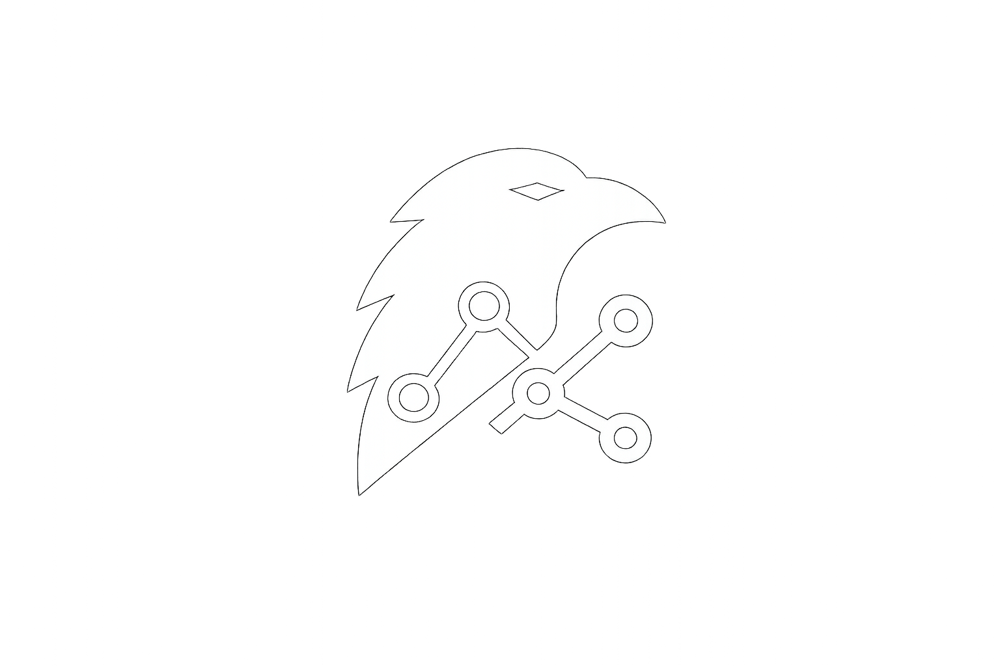

GitHub Actions
31/31 checks passed

Connecting…What needs to happen before deploy
31/31 checks passed
Unit, integration, contract tests green
Watch orders.events before promote
Platform owner review
GitHub, Kafka, Prometheus
Overview of repositories, their role in the release flow and latest GitOps state. Click a repo for details.
Filter by repository — show panels for one or more repos at a time.
Topics, consumer groups, lag and a quick look at streams that may block a release.
Top groups by delay
Partition balance and throughput
SLO, burn rate, error ratio and latency — api-gateway.
24h window
api-gateway · milliseconds
Test pyramid, failing suites, flaky tests and release confidence.
0 failed
0 failed
0 failed
needs attention
Environment pipeline for api-gateway — dev through prod. Click a row to expand jobs.